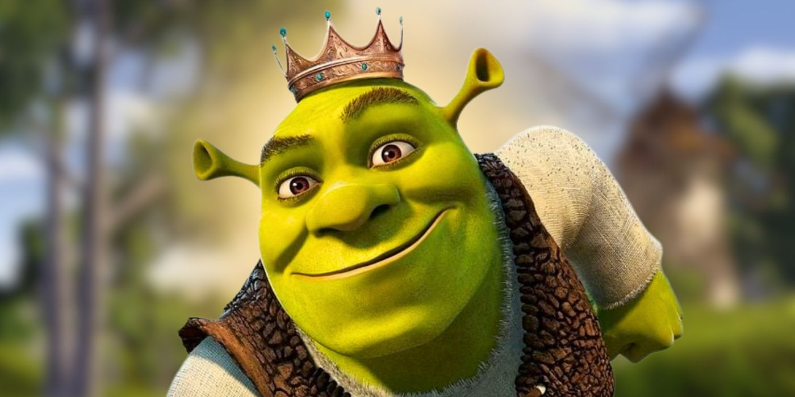

10 причи почему "Шрек" - лучший мультфильм в мире
1. Необычный главный герой

Главный персонаж Шрек — это не красивый принц и не храбрый рыцарь, а зелёный огр, который живёт один в болоте. Такой выбор героя сразу ломает привычные стереотипы о сказках, где главные персонажи обычно идеализированы. Шрек ворчливый, грубоватый и далеко не дружелюбный на первый взгляд, но это делает его более настоящим и человечным. Мы видим, что за внешностью и поведением скрывается глубокая душевная боль, одиночество и желание быть принятым. Этот подход сделал персонажа ближе к зрителям, которые могут узнавать себя в его недостатках и стремлениях.
2. Юмор для всех возрастов

Мультфильм наполнен шутками, которые работают сразу на двух уровнях: дети смеются над простыми и визуальными моментами, как, например, смешные реплики Осла или нелепые ситуации. В то же время взрослые ловят скрытые саркастичные намёки на современную культуру и аллюзии на знаменитые фильмы, такие как «Матрица» или «Миссия невыполнима». Сцены вроде турнира в Дюлоке или упоминания о сказочном ипотечном кризисе смотрятся особенно забавно с возрастом. Мультфильм буквально создан так, чтобы его интересно было смотреть всей семьёй, и никто не скучал. Такое многоуровневое чувство юмора — редкость для анимационных фильмов.
3. Сатира на сказочные клише
«Шрек» высмеивает многие штампы, которые мы привыкли видеть в сказках, и это делает его уникальным. Принцесса Фиона оказывается не такой идеальной, как принято думать, а злодей Лорд Фаркуад вообще выглядит смешным и нелепым. Прекрасные принцы, спасение принцесс, замки и драконы — всё это переворачивается с ног на голову и подаётся с юмором. Даже сцена, где дракон влюбляется в Осла, — это пародия на классический сюжет о любви. Такой подход делает мультфильм свежим, оригинальным и непредсказуемым.
4. Трогательная история о принятии себя

Центральная идея фильма заключается в том, что важно принимать себя таким, какой ты есть, и не бояться показывать свою истинную сущность. Шрек изначально стесняется своей внешности и привык скрываться от людей, так как его считают чудовищем. Однако в течение фильма он понимает, что достоин любви и дружбы, несмотря на то, как он выглядит. Принцесса Фиона тоже проходит через принятие своей истинной природы, и её финальное превращение лишь подчёркивает послание: настоящая красота — это то, что внутри. Эта идея вдохновляет зрителей всех возрастов и остаётся актуальной.
5. Культовые персонажи

Каждый персонаж в мультфильме — это отдельная звезда. Шрек с его саркастичным чувством юмора и добрым сердцем покоряет зрителей. Осёл — невероятно харизматичный и забавный спутник, который добавляет энергии и веселья в каждую сцену. Фиона, хоть и кажется типичной принцессой, оказывается сильной, независимой и глубокой личностью. Даже второстепенные герои, такие как Лорд Фаркуад или Кот в сапогах, стали невероятно запоминающимися благодаря их уникальным чертам и смешным моментам. Такой подбор персонажей делает мир Шрека живым и насыщенным.
6. Прекрасная музыка
Саундтрек «Шрека» стал легендарным, и это неудивительно. Открывающая песня “All Star” от Smash Mouth задаёт энергичный и юмористический тон всей истории. Музыкальные композиции идеально подбираются под эмоциональные моменты, например, трогательная “Hallelujah” подчеркивает одиночество и тоску Шрека. Кроме того, мультфильм использует музыку как инструмент для юмора, например, сцену, где группа рыцарей танцует в Дюлоке под заводную мелодию. Саундтрек «Шрека» до сих пор слушают миллионы людей, что подчёркивает его долгосрочное влияние.
7. Графика, опередившая время

Для 2001 года анимация в «Шреке» выглядела невероятно впечатляюще. Технологии позволили создать детализированные ландшафты, выразительные мимику персонажей и динамичные экшен-сцены. Особенно выделяются сцены с драконом, где каждая деталь его чешуи прорисована с большим вниманием. Даже спустя годы мультфильм смотрится современно, что говорит о его высоком уровне качества. Многие студии после выхода «Шрека» начали стремиться к такому же уровню анимации.
8. Послание о дружбе

Дружба между Шреком и Ослом — одна из самых тёплых и искренних частей фильма. Они начинают как полные противоположности: Осёл — болтливый и энергичный, а Шрек — замкнутый и раздражительный. Но постепенно между ними выстраиваются настоящие доверительные отношения. Осёл учит Шрека открываться и доверять людям, а Шрек показывает, что настоящая дружба — это поддержка, даже в трудные моменты. Их взаимодействие доказывает, что дружба может возникнуть между самыми разными людьми (или существами).
9. Универсальный успех

«Шрек» полюбился зрителям по всему миру благодаря своему сочетанию юмора, трогательной истории и отличных персонажей. Он завоевал не только зрительские симпатии, но и признание критиков, выиграв первый в истории «Оскар» за лучший анимационный фильм. Его популярность объединила поколения — родители и дети с удовольствием смотрели фильм вместе. Даже сегодня он остаётся одним из самых популярных мультфильмов, к которому люди возвращаются снова и снова. Его успех привёл к созданию успешных сиквелов и спин-оффов.
10. Влияние на поп-культуру
После выхода «Шрек» моментально стал феноменом поп-культуры. Многие фразы из мультфильма, такие как «Луковицы многослойные, как и мы», разошлись на цитаты. Персонажи и сцены стали популярными мемами, которые до сих пор используют в интернете. Даже спустя годы, мультфильм остаётся источником вдохновения для шуток, пародий и культурных отсылок. «Шрек» не просто мультфильм, а культурный феномен, который продолжает жить своей жизнью в мире мемов и фанатского творчества.
Про Автора